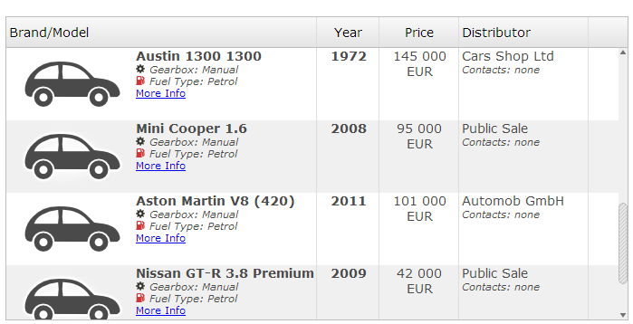

Using SWT API it is possible to apply any Font (including bold and italic styles) to any Widget, as long as it is installed on the target machine:
Label boldLabel = new Label( parent, SWT.NONE );
boldLabel.setFont(
new Font( parent.getDisplay(), "Arial", 16, SWT.BOLD )
);Note that the font height is measured in pixels in RAP (for historical reasons), while SWT uses points. Usually, you can convert the values using this equation:
1px = 0.75pt
therefore
12pt / 0.75 = 16px
While the SWT API can only modify one widget at a time, the RAP CSS Theming API is
designed to change the appearance for all widget of a given class. However,
specific instances can still be targeted using custom variants.
The Theming API also features some additional properties like text-shadow and
text-decoration.
CSS:
Label.customLabel {
font: bold 16px Arial;
text-shadow: 2px 2px #bbbbbb;
text-decoration: underline;
}Java:
Label customLabel = new Label( parent, SWT.NONE );
customLabel.setData( RWT.CUSTOM_VARIANT, "customLabel" );
customLabel.setText( "This is funny!" );Result:
The properties font, text-shadow and text-decoration
are available on nearly all themeable widgets. Note that text-shadow is not
supported in Internet Explorer.
While SWT and theming API are able to change the font of any widget, they can only change the
font for the entire widget. Using the RAP-exclusive (not supported in SWT)
markup feature, it is possible to change only parts of the text.
This is currently supported on Label, CLabel, List,
Tree and Table. Before you can use markup in your widget,
you must first enable it explicitly using the RWT.MARKUP_ENABLED constant
as shown below, directly after calling the constructor. (It may not possible to enable
this feature later on, and it can not be disabled.) Afterwards, a subset of HTML tags
can be freely used in the widgets text property:
Label markupLabel = new Label( parent, SWT.NONE );
markupLabel.setData( RWT.MARKUP_ENABLED, Boolean.TRUE );
markupLabel.setText( "<i>This</i> <ins>is</ins> <b>markup!</b>" );Result:

To achieve similar effects in SWT, the application would have to draw on the widget using a
PaintListener, which is not supported in RAP except on Canvas.
The markup is validated when the text is set on the widget, and incorrect or unsupported markup
will cause an IllegalArgumentException. Using markup without enabling the feature
first will not cause an exception, just display the text as is.
If the physical and logical tags allowed in the markup are not sufficient for your needs,
you may also use a style attribute to specify any CSS code supported by the
browser.
Label cssLabel = new Label( parent, SWT.NONE );
cssLabel.setData( RWT.MARKUP_ENABLED, Boolean.TRUE );
cssLabel.setText(
"<span style='font:bold 16px Arial;'>This is also BOLD</span>"
);
Unlike the HTML tags, the style properties are not validated on the server. Invalid
syntax within the style attribute will likely be ignored by the browser, as will
unsupported properties. Using CSS3 properties is therefore not recommended when targeting
older browser.
The markup feature may not only be used to change the font of the text, but can also insert elements that are not pure text.
Using the <br/> tag, it is possible to add line breaks.
While this is also possible without markup on Label, this is a new feature for
List, Tree and Table.
The <img/> tag can insert images anywhere into your text. You can use any URL as the
source, but if you want the RAP application to provide to register it as a resource first.
Ideally, this is done during the application start using Application Configuration or
the org.eclipse.rap.ui.resources extension point (for workbench applications).
If the resource has to be registered at runtime, use the ResourceManager directly.
(If you do so, you might also to de-register the resource if it is no longer required.)
Label label = new Label( parent, SWT.NONE );
label.setData( RWT.MARKUP_ENABLED, Boolean.TRUE );
String src = RWT.getResourceManager().getLocation( "icon.png" );
label.setText(
"This is the world <img width='24' height='24' src='" + src + "'/> !"
);Result:

The widget and height attributes are mandetory and do not have to match those
of the actual image.
Finally, you can use markup to insert normal hyperlinks into your application. If you do not want to close the UI when the user clicks it, make sure to also set the target property. Alternatively, you can integrate the link with the BrowserNavigation by pointing to a fragment id. Examples:
Label linkLabel = new Label( parent, SWT.NONE );
linkLabel.setData( RWT.MARKUP_ENABLED, Boolean.TRUE );
linkLabel.setText(
"Visit <a href='http://www.eclipse.org/rap' target='_blank'>RAP</a>!"
);
Label navLabel = new Label( parent, SWT.NONE );
navLabel.setData( RWT.MARKUP_ENABLED, Boolean.TRUE );
navLabel.setText( "Go to <a href='#navPoint'>navPoint</a>!" );
Combining the markup feature with List, Tree or Table
allows you to present your data ina much more informative and appealing way.

After setting the MARKUP_ENABLED property, markup is enabled for all items of
the widget, except for columns. There is, however, one more proprety that might need to be set.
Since RAP can not predict how high items with markup are going to be, it will
not include it in the layout calculations for the height of the rows. This may result in cut off
content, especially if <br/>, <span>
or <img/> tags are used. To fix this, you can set the height the rows should
have manually using the RWT.CUSTOM_ITEM_HEIGHT constant:
List markupList = new List( parent, SWT.BORDER );
markupList.setData( RWT.MARKUP_ENABLED, Boolean.TRUE );
markupList.setData( RWT.CUSTOM_ITEM_HEIGHT, new Integer( 40 ) );
markupList.setItems( new String[]{
"<big>big</big>",
"<small>small</small>",
"with<br/>break"
} );
While RAP does not include an markup-enabled text field, there is a rich text editor add-on available called (and based on) "CKEditor".